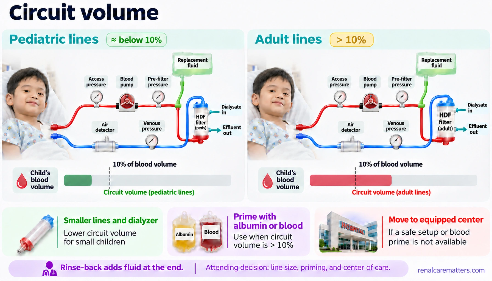
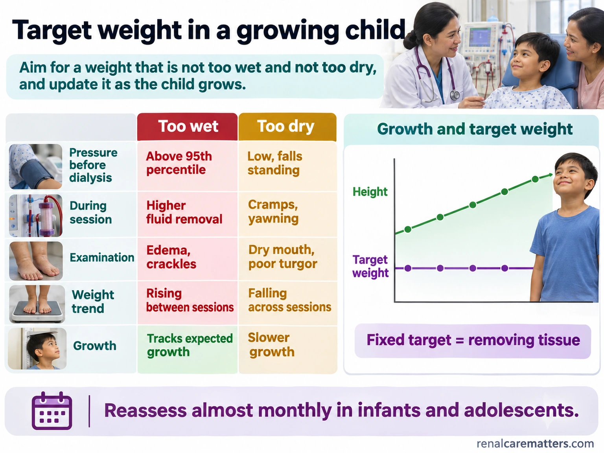
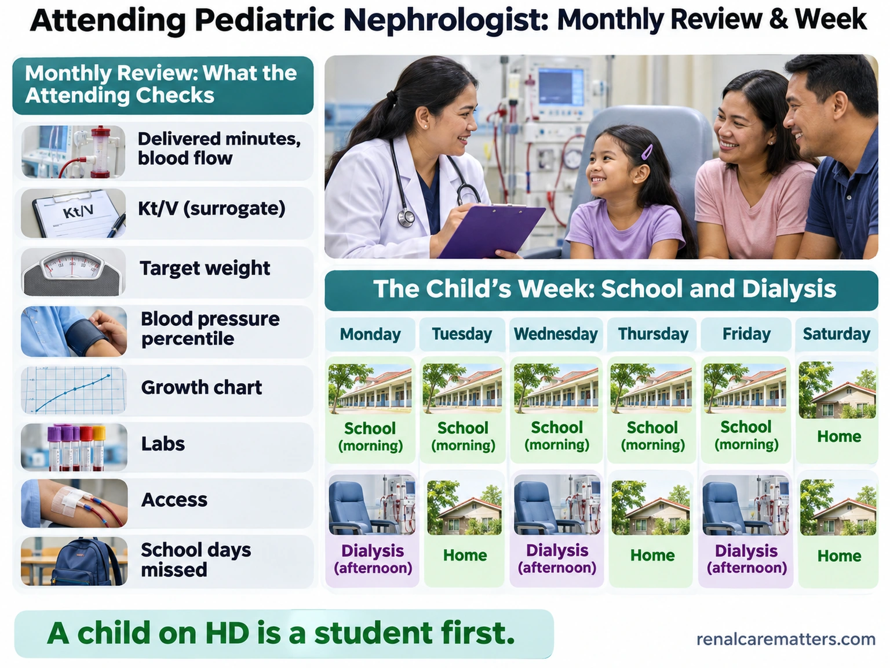

Pediatric HD prescription: the circuit, the child and adequacy
Match the circuit to the child's blood volume, set ultrafiltration and target weight, and review delivered dialysis and growth.
PublishedNailathalaGipatikPepalwal:ReferencesMga SanggunianMga TinubdanReng Reperensya:9Audience: Pediatric nephrologists · pediatric nephrology fellows · adult nephrologists, intensivists and neonatologists who share kidney care for children in the clinic, ward, NICU, PICU, dialysis unit and homeRead timeOras ng pagbasaOras sa pagbasaOras ning pamamasa:
Training track for attending pediatric nephrologists
This module is study material for attending pediatric nephrologists and fellows. It explains the reasoning behind common decisions; it is not a protocol and it gives no doses. Doses, fill volumes and thresholds must come from current pediatric guidelines, product labels, your institution’s approved pediatric protocols and a pediatric pharmacist. Benefit rules change: confirm them on the date of service. Every case is fictional.
Learning objectives
After this module you should be able to
Match the hemodialysis (HD) circuit to the child, keeping extracorporeal volume within about a tenth of the child’s blood volume and deciding when to prime with blood or albumin.
Write the elements of a pediatric HD prescription (blood flow, time, dialyzer, target weight, ultrafiltration) and review delivered dialysis, with Kt/V treated as a surrogate.
Interpret the evidence on longer, more frequent and convective dialysis in children, including hemodiafiltration, and plan the child’s week around school and growth.
Pre-testBefore you read, answer the 5 self-assessment questions and note your score. After the module, select New set of questions and compare. The difference is what you learned; the questions you still miss are what to reread.
Start here
The big picture, in plain words
Your role · the child’s prescriber in an adult unitMany Philippine children on hemodialysis (HD) are dialyzed in adult units, where the nurses and the physician on duty are skilled with adults and see a child only occasionally. You write a prescription that the unit can deliver safely with the equipment it has, you tell the team what is different about this child, and you review the child every month: delivered dialysis, target weight, blood pressure, growth and school.
In plain wordsA dialysis circuit is a loan of blood. The machine borrows blood, cleans it and returns it. For an adult, the loan is a small fraction of what the body holds. For a small child, the same circuit can borrow so much that the body runs short while the loan is out.
The picture has a limit. The blood is not simply missing; it is replaced by the priming fluid the circuit was filled with, and the body responds by tightening vessels and pulling fluid from the tissues. A small child has less reserve for both, so the volume outside the body, the speed of fluid removal and the speed of solute removal all matter more than in an adult. And at the end of the session the circuit returns its contents, which is a fluid load of its own.1
Figure 1 · Key numbers
Extracorporeal volumeTotal of needles or catheter, tubing and dialyzer should be less than about 10% of the child’s total blood volume [European Pediatric Dialysis Working Group 2005]
Blood flow described150–200 mL/min/m² or 5–7 mL/min/kg often sufficient [same source]
Kt/VA minimum single-session Kt/V of 1.2–1.4 thought desirable; adequacy tested monthly [same source]
Target weightReassess almost monthly in infants and adolescents [same source]
hemodiafiltration (HDF), Heart and Height (3H) study, non-randomized190 children, 28 centers; height standard deviation score (SDS) rose on hemodiafiltration, static on HD
These are ranges described by an expert group, not orders. Your unit’s pediatric protocol and the equipment it actually has set the prescription for each child.
Most school-age children dialyze safely three times a week once the circuit fits them and the fluid plan is realistic. A few, especially small children and new starters, are harmed by an adult prescription applied to a child’s body. Your work is to fit the circuit, the blood flow and the fluid removal to the child, to judge the prescription by delivered dialysis, blood pressure and growth, and to protect the school week.
Opening case · fictional
Case: Adult lines for an 18 kg boy
Miguel Alcantara is 6 years old, weighs 18 kg and is 112 cm tall. He was on peritoneal dialysis (PD) for two years. After a third Pseudomonas peritonitis his catheter was removed and his membrane is no longer usable. Yesterday a tunneled internal jugular catheter was placed at a tertiary government hospital in Iloilo City, and he is to start maintenance HD at an adult freestanding unit near his home in Pavia, Iloilo.
At 7 a.m. the head nurse calls you. The unit has no pediatric blood lines; the smallest dialyzer it stocks is an adult size. His blood urea nitrogen is 98 mg/dL, potassium 5.8 mmol/L, and he is 1.2 kg above his last clinic weight with mild periorbital edema. The physician on duty suggests a standard 4-hour session at the blood flow used for small adults “to catch up.” His mother, Grace, asks how he can stay in Grade 1 if he must come three mornings a week.
Before reading on, decide:
Is the adult circuit safe for Miguel, and what do you need to know before the first session?
What will the first sessions look like in principle, and why not a standard adult session?
What will you review every month once Miguel is established, and how will you protect his school week?
Keep your answers in mind. The lesson gives you what you need, and the case review near the end shows one sound response.
Lesson · part 1
The circuit against the child’s blood volume
The extracorporeal circuit is everything outside the child: the catheter or needles, the arterial and venous blood lines and the dialyzer’s blood compartment. When the session starts, the child’s blood fills it and the priming fluid enters the child. The European Pediatric Dialysis Working Group guideline states that the total extracorporeal blood volume should preferably be less than 10% of the child’s total blood volume, which is essential for small children; a near-normal hemoglobin allows this to be exceeded slightly without hypotension. It adds that the larger the extracorporeal volume, the larger the volume returned to the child at the end, and that priming with saline, albumin and sometimes blood should be used in the first sessions in babies and small infants.1
How to apply it. Ask the unit for the priming volume of the blood lines and of the dialyzer it proposes, add them, and compare the total with 10% of the child’s estimated blood volume, using the pediatric reference your unit’s protocol names. If the circuit is larger than that limit, you have three choices: find smaller lines and a smaller dialyzer, prime the circuit with albumin or blood as your protocol directs, or delay HD and transfer the child to a center equipped for children. A school-age child of 18 kg may be within the limit with pediatric lines and outside it with adult lines; an infant almost always needs pediatric equipment and often a blood prime.
Choosing lines and dialyzer. Lines from neonatal to adolescent sizes exist, and they differ in volume, biocompatibility and sterilization method.1 The guideline suggests a synthetic membrane and notes that a high-flux membrane requires ultrapure dialysate.1 Choose the dialyzer by blood compartment volume and surface area relative to the child, not by what is on the shelf for adults.
Component
Why it matters in a child
What you ask the unit
Blood lines
Adult lines hold far more blood than pediatric lines
Priming volume of the arterial and venous lines stocked
Dialyzer
Blood compartment volume adds to the total; surface area sets clearance
Priming volume and surface area of the smallest dialyzer available
Catheter or needles
Small lumens limit blood flow
Catheter size and the flow it achieved at insertion
Priming fluid
Saline dilutes, albumin supports pressure, blood prevents anemia and hypotension
What the protocol allows and who orders blood
Rinse-back at the end
Returning the circuit adds fluid
How rinse-back volume is counted in the fluid balance
Infants. The infant recommendations name PD as the preferred therapy and reserve HD as first choice for primary oxalosis and for infants who cannot have PD (omphalocele, gastroschisis, diaphragmatic hernia, an obliterated peritoneal cavity, bladder exstrophy), or as short-term rescue after PD catheter problems or abdominal surgery.2 If an infant needs HD, it belongs in a center with pediatric equipment and staff.
RememberAdd up the circuit before the first session. If it is more than about a tenth of the child’s blood volume, change the equipment, prime it, or move the child.
At an adult unit, first session · fictional
A 14 kg girl is connected with adult lines and the smallest adult dialyzer. Twenty minutes in, she is pale and yawning, and her blood pressure has fallen by a third. No fluid has yet been removed.
The circuit had taken a large share of her blood volume and replaced it with saline. You stop the session safely, return the blood, and arrange pediatric lines and a blood prime before her next session.
What this shows. Early hypotension in a small child is often the circuit, not the ultrafiltration.

Figure 2. The circuit as a loan of blood. Pediatric versus adult lines against a small child's blood volume, the 10% line, and when to prime with albumin or blood.
Lesson · part 2
Blood flow, time and the urea dose
Blood flow. Urea clearance rises with blood flow. The pediatric guideline describes an extracorporeal blood flow of 150–200 mL/min/m² or 5–7 mL/min/kg as often sufficient.1 It is a range for the prescriber, not a target to push toward; the catheter, the child’s blood pressure and the session goal set the actual flow.
The first sessions. A very uremic child is at risk of dialysis disequilibrium: urea falls quickly in the blood but slowly in the brain, water moves into brain cells, and the child develops headache, vomiting, confusion or seizures. The guideline therefore keeps blood flow low and the first session short, so that urea clearance in that session is gentle, and builds up over several sessions.1 Module 25 covers disequilibrium in detail. “Catching up” is exactly what the first sessions must not do.
Kt/V. Kt/V is dialyzer urea clearance (K) multiplied by session time (t), divided by the urea distribution volume (V). In children, V can be estimated from sex-, height- and weight-specific formulas. The guideline describes a minimum Kt/V of 1.2–1.4 as desirable, recommends monthly adequacy testing, and warns that dialysis and residual kidney clearance are not equivalent and that the prescription should be adequate before it is optimized, not only a urea dose.1 It also asks that Kt/V be read with the normalized protein catabolic rate, because a well-fed growing child generates more urea.1 Kt/V is a surrogate: it says nothing about fluid, phosphate, middle molecules or how the child feels.
Access and delivered dose. In the International Pediatric Hemodialysis Network (IPHN) registry of 552 children from 27 countries, central venous catheters were the predominant access; arteriovenous fistulas achieved higher blood flow and Kt/V, and catheters had more dysfunction (2.5 versus 1.2 per 1,000 access-days) and all the access infections (1.3 per 1,000 catheter-days).3 This is observational and confounded by age and the expected time to transplant, but it reminds you that the access often limits the dose (Module 24).
Why delivered dialysis falls
What you see
What you check
Catheter cannot deliver the set flow
Arterial pressure alarms, flow turned down
Achieved versus prescribed blood flow, catheter position, lock practice
Sessions shortened
Cramps, hypotension, late starts, school or transport
Minutes delivered per session over the month
Recirculation
Kt/V falls with no change in time or flow
Line reversal, catheter tip
Sampling error
An unexpected jump or drop
Timing and technique of the post-dialysis sample
Dialyzer clotting
Rising venous pressure, dark fibers
Anticoagulation per protocol, hematocrit
Dialysate and water. The 2005 guideline describes bicarbonate-buffered dialysate, a glucose concentration at physiological level, a low dialysate calcium becoming standard, and quality control of the dialysate for bacteria and endotoxin; high-flux membranes and online HDF need ultrapure dialysate because back-filtration can carry contaminants into the blood.1 In an adult unit, ask the technical staff what water and dialysate quality the unit achieves before you ask for high-flux dialysis or HDF for a child (Module 25 covers water safety).
Figure 3 · A complete pediatric HD order
CircuitLines, dialyzer, total extracorporeal volume, priming fluid.
Blood sideAccess, blood flow for this phase (first sessions or maintenance), session time, frequency.
DialysateComposition per protocol: sodium, potassium, calcium, bicarbonate; dialysate flow.
FluidTarget weight and date set, maximum hourly ultrafiltration, what to do if it cannot be reached.
Anticoagulation and lockFrom the pediatric protocol, with the catheter’s lumen volumes.
MonitoringObservations and how often, blood tests, when to call you and the alert values.
Write the whole order every time it changes. In an adult unit the physician on duty may meet the child for the first time at 2 a.m.; the order sheet is your voice in the room.
RememberStart gently, then build. A child’s first sessions are short and slow on purpose; adequacy comes over weeks, not in one morning.
Lesson · part 3
Ultrafiltration and target weight in a growing child
Target weight. The guideline defines dry weight as the weight at the end of a regular session below which the child becomes symptomatically hypotensive. In children it is particularly hard to define: hypotension depends on plasma refilling as well as on the ultrafiltration rate, body composition changes with age, and in infants and adolescents dry weight must be reassessed almost monthly to follow rapid growth, and also during growth hormone treatment or illness.1 A target weight that is not raised as the child grows makes every session pull off tissue the child has just built, and the child cramps, becomes hypotensive and stops growing.
Fluid removal. The speed of ultrafiltration, relative to the child’s size, decides whether refilling keeps up. In the 3H study, a higher ultrafiltration rate was among the factors associated with higher carotid intima-media thickness and mean arterial pressure scores.4 Use your unit’s pediatric protocol for the maximum hourly ultrafiltration, and when the weight gain between sessions cannot be removed within it, lengthen or add sessions rather than pulling harder.
Blood pressure and the heart. In 910 children on HD or hemodiafiltration (HDF) in IPHN, uncontrolled hypertension was present in 55% of observations and masked hypertension in 24%; 51% of 1,135 echocardiograms showed left ventricular hypertrophy (LVH). Blood pressure standard deviation scores were associated with interdialytic weight gain, and weight gain was associated with lower urine output and higher dialysate sodium. Conventional HD rather than HDF was associated with higher mean arterial pressure scores and with LVH progression.5 These are associations in a large prospective registry; they point to salt and water balance as the modifiable target.
Sign
Too wet
Too dry
Blood pressure before dialysis
Above the 95th percentile, rising
Low, falls further on standing
During the session
Comfortable; pressure stays high
Cramps, yawning, vomiting, hypotension near the end
Examination
Periorbital or leg edema, raised venous pressure, crackles
Dry mucosa, tired after every session
Weight trend
Gains between sessions consistently large
Post-dialysis weight below target, no weight gain over months
Growth
Weight up, height flat (fluid, not tissue)
Weight flat, height flat (tissue being removed)
At the monthly review · fictional
A 12-year-old girl on HD for eight months cramps in the last hour of most sessions. Her target weight has not changed since she started; she has grown 4 cm and her mother says she is eating better.
You examine her, review the session blood pressures and raise the target weight. The cramps stop over two weeks.
What this shows. In a growing child a fixed target weight is a falling target weight. Review it every month.
Residual urine. Many children start HD with some urine output, and it is worth protecting: it widens the fluid allowance, clears middle molecules and phosphate, and makes each session gentler. In the IPHN cohort, lower urine output was associated with larger weight gains.5 Measure it at each monthly review, avoid nephrotoxic drugs and contrast where alternatives exist, and avoid repeated hypotension during sessions, which can injure what remains.
RememberReassess the target weight every month, and remove fluid at a speed the child can refill. When the gain is too large, add time, not speed.

Figure 4. Target weight in a growing child. Too wet or too dry, and why the target must be reassessed every month.
Lesson · part 4
Longer, more frequent and convective dialysis
Children on dialysis carry cardiovascular disease and growth failure from early childhood. The question is whether more dialysis time or more convective clearance changes those outcomes.
The 3H study. The HDF, Heart and Height (3H) study was a non-randomized comparison within the IPHN registry. It enrolled 190 children from 28 centers; 78 on conventional HD and 55 on postdilution online HDF completed one year. The groups were similar for age, dialysis vintage, access, frequency, blood flow and residual function. Carotid intima-media thickness score rose on HD and stayed static on HDF (HD associated with a 0.47 higher annualized score on propensity analysis); height score rose on HDF and stayed static on HD; mean arterial pressure score rose on HD only. Children on HDF had lower β2-microglobulin, parathyroid hormone (PTH) and C-reactive protein, fewer headaches, dizziness or cramps, and shorter recovery after sessions.4 At baseline, HDF children achieved a median convection volume of 13.3 L/m², and ultrapure water was available to only 52% of the HD group.6 The authors state that randomized trials are needed. The study shows an association with surrogate vascular measures and growth, not fewer deaths or events.
Daily online HDF. In a single-center observational cohort of 15 children already on growth hormone, daily online HDF six days a week (18 hours weekly) raised mean growth velocity from 3.8 to 14.3 cm per year in the first year, and height score moved from −1.5 to +0.2 over a mean 20.5 months.7 It is a small uncontrolled study with an intensive regimen few programs can offer, but it shows what happens to growth when dialysis is no longer the limit.
The bigger picture. The 2005 guideline already noted that longer or daily dialysis controls phosphate better than conventional HD and should be considered at least for high-risk children with cardiovascular impairment, and that dialysis in children is a temporary measure compared with transplantation, which gives the best chance of rehabilitation in education and psychosocial functioning.1 A review in The Lancet Child & Adolescent Health notes that morbidity and mortality remain higher on chronic dialysis than after transplantation.8 Every HD prescription for a child is also a bridge: keep the transplant work-up moving (Module 26).
Coverage. Philippine Health Insurance Corporation (PhilHealth) covers up to 156 HD sessions a year under Circular 2024-0023.9 That is enough for three sessions a week, not a ceiling on what a child needs. If a child needs longer or more frequent sessions, write the clinical reason in the chart, discuss the cost with the family and the social worker, and confirm the benefit on the date of service.
Weight gain, dialysate sodium and HD (vs HDF) associated with blood pressure and LVH
That changing them reduces LVH
RememberMore time and more convection are associated with better growth and vascular measures in children, in non-randomized studies. Use them to argue for time, but call them associations.
Lesson · part 5
The monthly review and the child’s week
On your monthly visit, review the child and the dialysis together. In an adult unit, also review whether the unit can still meet the child’s needs.
What you review
Why
What makes you act
Delivered minutes and achieved blood flow for every session
Delivered, not prescribed, dialysis
Shortened sessions, flow repeatedly turned down
Kt/V, sampled correctly, with protein catabolic rate
Blood pressure percentile; ambulatory monitoring where available
Masked and uncontrolled hypertension are common
Pressures above the 95th percentile
Potassium, phosphate, calcium, PTH, bicarbonate, albumin, hemoglobin, iron studies
Bone, growth, anemia
See Module 18 for anemia and bone
Access function and the lock used
Access limits the dose
Alarms, poor flow, fever (Module 24)
School attendance, mood, the family’s transport and cost
Three sessions a week are a heavy load
Missed school, skipped sessions
Anticoagulation and locks. The circuit needs anticoagulation, usually heparin, and some units use citrate or a heparin-free technique when bleeding risk is high. The catheter is locked between sessions with heparin or citrate. Doses and lock volumes come from your unit’s pediatric protocol and the catheter’s labeled lumen volume, never from the adult default.
Anemia and nutrition. Blood lost in the circuit and in sampling matters more in a small child; keep sampling to what changes management. A growing child on HD needs protein and energy for growth on top of dialysis losses; the dietitian should see the child at least as often as your unit protocol requires, and the Kt/V should be read alongside the protein catabolic rate.1
The child’s week. Three sessions of several hours, plus travel, can take half a school week. Ask the unit for an afternoon shift after classes, or a Monday-Wednesday-Friday afternoon pattern, and write a letter to the school explaining the absences, the catheter, and activities to avoid. The pediatric guideline names the school teacher and play therapist as members of the team.1 In an adult unit, ask for a chair in a quieter corner, a chaperone, permission for the parent to stay, and something to do: books, a tablet with headphones, homework.
In an adult unit, a Saturday session · fictional
A 10-year-old girl dialyzes between two elderly men. The nurse on duty has not dialyzed a child before and asks whether the adult resuscitation cart will do; the girl’s mother has been asked to wait outside.
You speak to the head nurse: a weight-based pediatric resuscitation sheet taped to the cart, the mother allowed at the chair as the unit’s chaperone policy permits, a quieter chair for the next session, and your number on the order sheet.
What this shows. An adult unit can dialyze a child safely when someone makes the differences explicit. That someone is you.
When the adult unit is not the right place. Some children should dialyze only where pediatric equipment and staff are available: infants and small children whose circuit needs a blood prime, children with unstable blood pressure or heart disease, new starters with very high urea, and any child the unit staff say they cannot safely care for. Say so in writing, and arrange the transfer rather than asking an adult unit to improvise.
PlanOne change at a time, written so the physician on duty can follow it.
RememberReview delivered dialysis, target weight, blood pressure and growth every month, and protect the school week. A child on HD is a student first.
Stop and call
Hypotension, pallor or yawning in the first 30 minutes of a session in a small child (circuit volume)
Headache, vomiting, confusion or seizure during or after an early session (disequilibrium; Module 25)
Fever or rigors during dialysis with a catheter (Module 24)
Pre-dialysis potassium above the unit’s alert value, or electrocardiogram (ECG) changes
Blood pressure persistently above the 95th percentile with edema

Figure 6. The monthly review and the child's week. What the attending checks each month and a dialysis schedule built around school.
On the floor
Real situations: problems and solutions
These are fictional but typical. For each one, cover the answer, decide what you would do, then compare. Where a step depends on local rules, your unit’s procedure and your supervisor’s direction come first.
The adult default prescription
What you see
A 9-year-old's first HD order at an adult unit is a copy of the unit's standard adult template: four hours, high blood flow, adult dialyzer, adult heparin dose.
What is likely going on
The template was used because no pediatric order set exists in the unit.
What to do
Rewrite the order for the child using your pediatric protocol: circuit volume checked, gentle first sessions, target weight, maximum ultrafiltration, and anticoagulation from the pediatric protocol. Ask the medical director to keep a pediatric order template on file.
Why it matters
Adult defaults applied to a child's body cause the hypotension, disequilibrium and bleeding that pediatric guidance is written to prevent.
Kt/V falls in the rainy season
What you see
A 13-year-old's Kt/V has fallen two months in a row with no change in prescription.
What is likely going on
Flooded roads made the family arrive late, and sessions were shortened to fit the shift.
What to do
Review delivered minutes before changing the order. Work with the unit on a shift the family can reach, and record the cause in the chart.
Why it matters
A dose that is not delivered is not a dose. The cause was transport, not the dialyzer.
Cramps at the end of every session
What you see
A 15-year-old boy cramps and vomits in the last hour of most sessions. His target weight was set a year ago; he has grown 6 cm.
What is likely going on
His target weight has not followed his growth, so each session removes tissue and pushes him below his true dry weight.
What to do
Examine him, review session blood pressures and raise the target weight; recheck in two weeks.
Why it matters
Adolescents grow fast. A target weight that is not reassessed monthly becomes a cause of symptoms and poor growth.
The family asks for more sessions
What you see
Parents of a 10-year-old with large weight gains ask whether she can dialyze four times a week; they worry PhilHealth will not pay.
What is likely going on
Her weight gains cannot be removed safely in three sessions; more time would help her blood pressure and cramps.
What to do
Document the clinical reason, discuss cost with the family and the social worker, and confirm what PhilHealth covers on the date of service; work with the dietitian on salt and fluid at the same time.
Why it matters
PhilHealth covers up to 156 sessions a year; coverage is not a ceiling on clinical need, and the reason for extra time must be written down.
Field notes
Keep a laminated card in the adult unit with the child's circuit volume, target weight, maximum ultrafiltration and your phone number.
Ask for the priming volume of every line and dialyzer the unit stocks and keep the list in the pediatric folder.
Plot height at every monthly visit; a child on HD whose height is flat needs a dialysis and nutrition review.
Ask for afternoon shifts for school-age children before the schedule is set.
Case review
Back to the case: Adult lines for an 18 kg boy
The circuit. Not until you have added it up. Ask the head nurse for the priming volumes of the adult lines and the smallest dialyzer, total them, and compare the total with 10% of Miguel’s estimated blood volume using your unit’s pediatric reference. If the circuit exceeds that, the options are pediatric lines and a smaller dialyzer from the referring hospital, a prime with albumin or blood as your protocol directs, or starting HD at the hospital that placed his catheter until the adult unit is equipped. Check his hemoglobin and blood pressure, confirm the catheter tip position and the flow it achieved, and make sure the unit has a pediatric resuscitation plan.
The first sessions. His urea is high and he has been uremic for days, so a standard adult session at a high blood flow risks disequilibrium: headache, vomiting, confusion or a seizure. The guideline keeps blood flow low and the first session short, with clearance built up over several sessions. Treat his potassium and fluid within that frame, removing fluid at a rate his small blood volume can refill. Write the prescription in full so the physician on duty can follow it, with the blood flow, time, dialyzer, target weight for now, maximum ultrafiltration, anticoagulation from the pediatric protocol, and when to call you.
Every month and every week. Review delivered minutes and blood flow, Kt/V with protein catabolic rate, his target weight (he is growing), blood pressure percentile, height and weight on the chart, potassium, phosphate, PTH and hemoglobin, and the catheter. Tell Grace you will ask the unit for an afternoon shift after classes, write to his school, and keep his transplant work-up moving, because dialysis is the bridge, not the destination. PhilHealth covers up to 156 sessions a year; if he ever needs more time, you will document why and confirm coverage.
Skills lab · with your preceptor
Skills checklist: Pediatric HD prescription: the circuit, the child and adequacy
Complete with a preceptor, in simulation or at your own unit. Sign-off is local. Your preceptor rates each step as satisfactory, needs practice, or not observed. Steps marked Critical must all be satisfactory before sign-off. This checklist supports supervised learning; your unit’s own procedure and competency form are the authority. A printable version of every checklist is on the trainer page.
Totals the extracorporeal volume of a proposed circuit and compares it with 10% of the child’s estimated blood volume
Writes a complete pediatric HD prescription that a physician on duty in an adult unit can follow
Reassesses target weight against growth, blood pressure and session symptoms
Reviews delivered minutes, achieved blood flow and Kt/V together and identifies the cause of a fall
Placement activity. Pediatric or adult HD unit with a pediatric patient, or simulation
Self-assessment
Check your understanding
Each visit draws 5 questions at random from this module’s 5-question bank. Choose the single best answer for each, then select Check answers; an explanation appears under the best answer. Select New set of questions for a different mix. A good target is 4 of 5 on two different sets. Nothing you select is sent anywhere; scoring happens in your browser.
Fischbach, M., Edefonti, A., Schröder, C., Watson, A., & European Pediatric Dialysis Working Group. (2005). Hemodialysis in children: General practical guidelines. Pediatric Nephrology, 20(8), 1054–1066. https://doi.org/10.1007/s00467-005-1876-y
Zurowska, A. M., Fischbach, M., Watson, A. R., Edefonti, A., Stefanidis, C. J., & European Paediatric Dialysis Working Group. (2013). Clinical practice recommendations for the care of infants with stage 5 chronic kidney disease (CKD5). Pediatric Nephrology, 28(9), 1739–1748. https://doi.org/10.1007/s00467-012-2300-z
Borzych-Duzalka, D., Shroff, R., Ariceta, G., Yap, Y. C., Paglialonga, F., Xu, H., Kang, H. G., Thumfart, J., Aysun, K. B., Stefanidis, C. J., Fila, M., Sever, L., Vondrak, K., Szabo, A. J., Szczepanska, M., Ranchin, B., Holtta, T., Zaloszyc, A., Bilge, I., ... Schmitt, C. P. (2019). Vascular access choice, complications, and outcomes in children on maintenance hemodialysis: Findings from the International Pediatric Hemodialysis Network (IPHN) Registry. American Journal of Kidney Diseases, 74(2), 193–202. https://doi.org/10.1053/j.ajkd.2019.02.014
Shroff, R., Smith, C., Ranchin, B., Bayazit, A. K., Stefanidis, C. J., Askiti, V., Azukaitis, K., Canpolat, N., Ağbaş, A., Aitkenhead, H., Anarat, A., Aoun, B., Aofolaju, D., Bakkaloglu, S. A., Bhowruth, D., Borzych-Dużałka, D., Bulut, I. K., Büscher, R., Deanfield, J., ... Schaefer, F. (2019). Effects of hemodiafiltration versus conventional hemodialysis in children with ESKD: The HDF, Heart and Height study. Journal of the American Society of Nephrology, 30(4), 678–691. https://doi.org/10.1681/ASN.2018100990
Borzych-Dużałka, D., Shroff, R., Ranchin, B., Zhai, Y., Paglialonga, F., Kari, J. A., Ahn, Y. H., Awad, H. S., Loza, R., Hooman, N., Ericson, R., Drożdz, D., Kaur, A., Bakkaloglu, S. A., Samaille, C., Lee, M., Tellier, S., Thumfart, J., Fila, M., ... Schmitt, C. P. (2024). Prospective study of modifiable risk factors of arterial hypertension and left ventricular hypertrophy in pediatric patients on hemodialysis. Kidney International Reports, 9(6), 1694–1704. https://doi.org/10.1016/j.ekir.2024.03.016
Shroff, R., Bayazit, A., Stefanidis, C. J., Askiti, V., Azukaitis, K., Canpolat, N., Agbas, A., Anarat, A., Aoun, B., Bakkaloglu, S., Bhowruth, D., Borzych-Dużałka, D., Bulut, I. K., Büscher, R., Dempster, C., Duzova, A., Habbig, S., Hayes, W., Hegde, S., ... Schmitt, C. P. (2018). Effect of haemodiafiltration vs conventional haemodialysis on growth and cardiovascular outcomes in children: The HDF, heart and height (3H) study. BMC Nephrology, 19(1), 199. https://doi.org/10.1186/s12882-018-0998-y
Fischbach, M., Terzic, J., Menouer, S., Dheu, C., Seuge, L., & Zalosczic, A. (2010). Daily on line haemodiafiltration promotes catch-up growth in children on chronic dialysis. Nephrology Dialysis Transplantation, 25(3), 867–873. https://doi.org/10.1093/ndt/gfp565
Rees, L., Schaefer, F., Schmitt, C. P., Shroff, R., & Warady, B. A. (2017). Chronic dialysis in children and adolescents: Challenges and outcomes. The Lancet Child & Adolescent Health, 1(1), 68–77. https://doi.org/10.1016/S2352-4642(17)30018-4
Educational material for physicians. Completing it is an Academy learning record only. It does not confer CPD units, PNSP or board certification, privileges, or PhilHealth accreditation, and it does not replace current guidelines, regulations, your institution’s pediatric protocols and formulary, or clinical judgment.